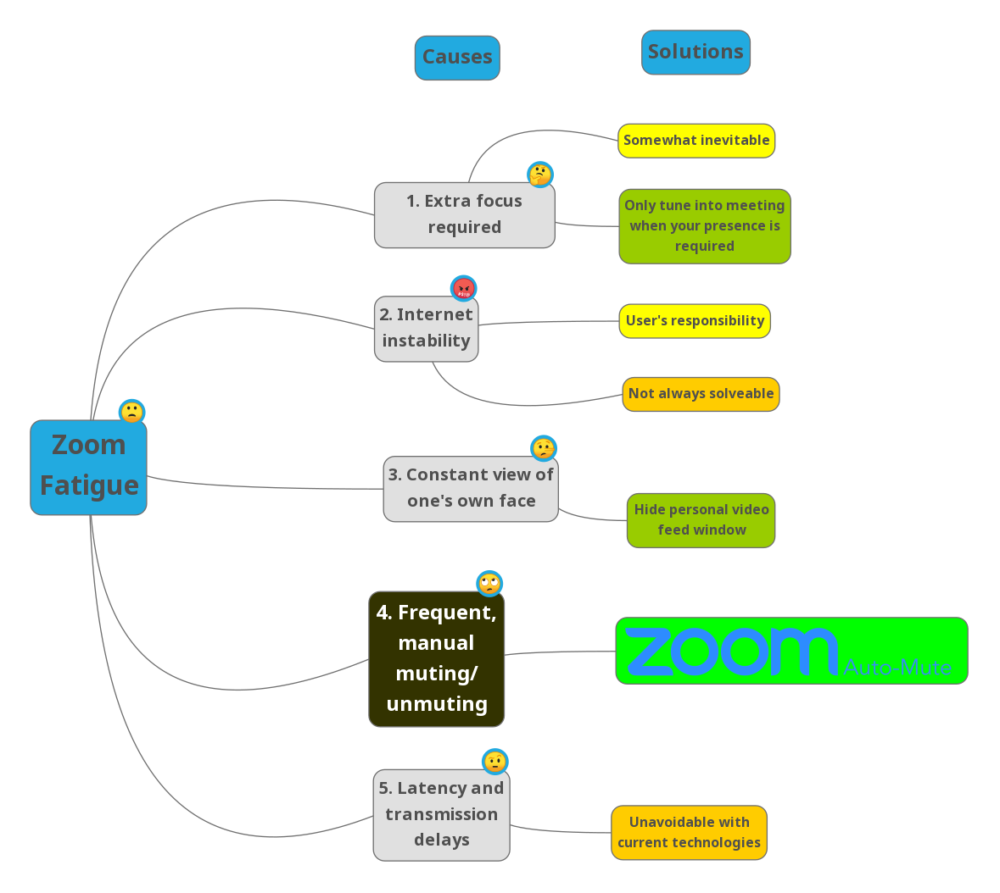
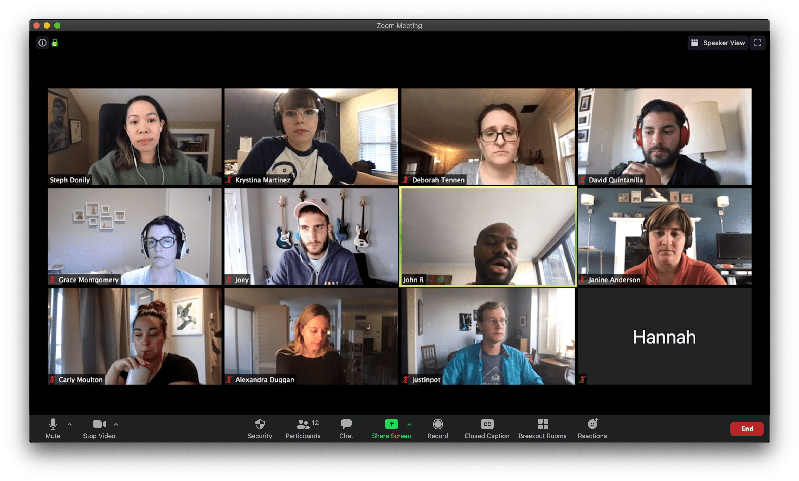
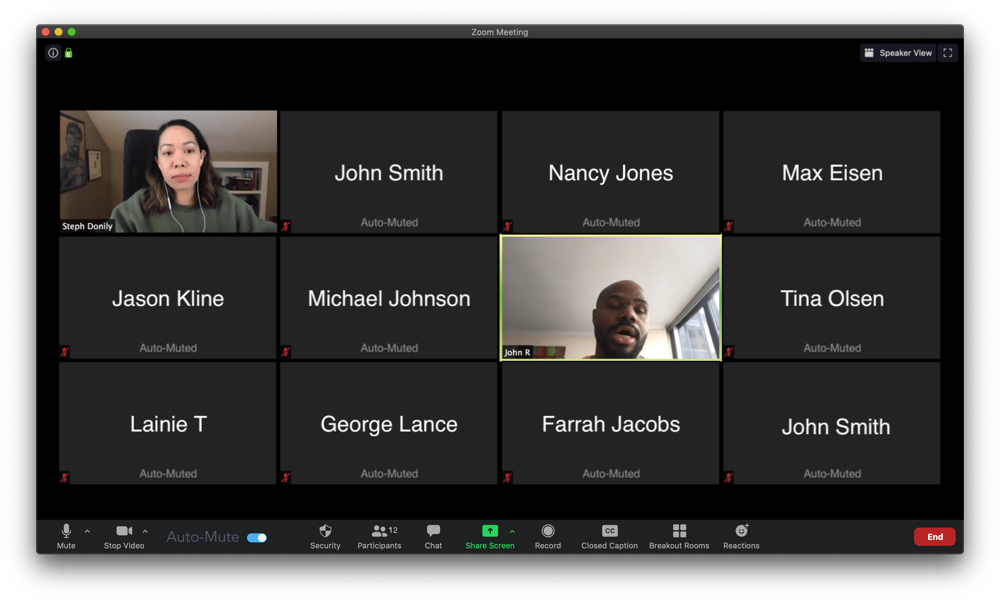
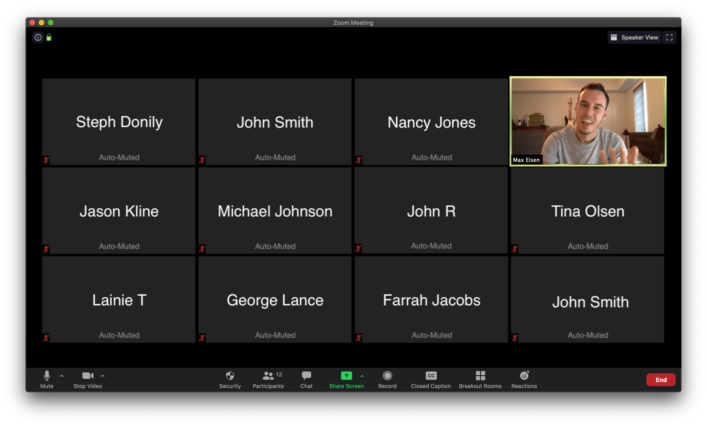

\
A Solution to Zoom Fatigue
Zoom Fatigue is real!
- Research shows that video calls require more focus than a typical face-to-face chat
- Quirks of virtual meetings cause users to give more focus to them than they would to a face-to-face meeting
- “People feel like they have to make more emotional effort to appear interested, and in the absence of many non-verbal cues, the intense focus on words and sustained eye contact is exhausting.”
- Calls are majorly subject to the inconsistencies and flaws of users’ internet connectivity
- Internet dropouts can result in choppy audio and video, inability to get a message across, and for other users in a call this can make things very awkward and uncomfortable
- Users generally do not enjoy seeing their own face, up close and in a clear window
- One user compared this to sitting in a real-life meeting and being forced to have a mirror in front of your face
- Many users find themselves obsessing over their own appearance, and finding their own face to be a major distraction in a Zoom meeting
- Users often forget to mute and unmute themselves as needed, or suffer through others forgetting to mute or unmute themselves
- We’ve all experienced this, whether it was a case of you speaking for 10 seconds before being told “you’re on mute” and having to repeat yourself after unmuting, or having to hear someone else screaming to someone else in their house because they forgot to mute their microphone
- Delays on phone or conferencing systems of 1.2 seconds made people perceive the responder as less friendly or focused (source)
- The delay for one’s audio to reach the dedicated Zoom server, and then be transferred to other participants’ own computers can cause a very uncomfortable pause between a question and an answer on a Zoom call, causing many to feel that there is tension between attendees of a Zoom meeting
How can these issues be solved?

After some brainstorming, I came to the conclusion that many of these issues have basic, manual solutions, or are somewhat unavoidable, but one simple additional feature could effectively solve one of these issues, while helping to ease all the rest...
With the addition of a smart "auto-mute" feature, any attendees in a Zoom call who are not presently engaged in conversation will have their video and audio temporarily switched off, effectively:
- Making users more comfortable that their face is only being seen and voice is only being heard when they want it to be
- Shifting full focus over to the attendees who are currently presenting
- Eliminating the need for a meeting host to manually mute users with distracting background noise
- Giving all users a break to gather their thoughts when they are not currently speaking or presenting
Zoom Auto-Mute will help take your meetings from this...

to this

and will help shift the focus over to the active speaker, eliminating cross-talk and background noise from users
